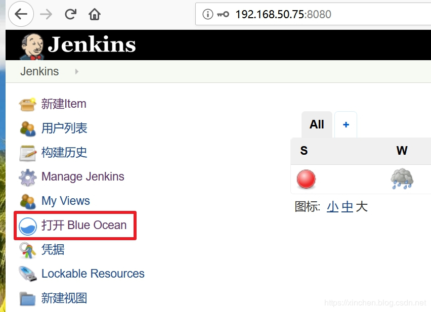

让Jenkins执行GitHub上的pipeline脚本原文出处:本文由博客园博主zq2599提供。
原文连接:https://www.cnblogs.com/bolingcavalry/p/11525939.html
本文是《Jenkins流水线(pipeline)实战》系列的第二篇，上一篇搭建好了Jenkins环境并执行了一个简单的pipeline任务，当时我们直接在Jenkins网页上编写pipeline脚本，这种方式虽然简单，但是也有不足之处：
- pipeline脚本内容复杂时，在网页上编辑和查找都不方便；
- 无法对脚本文件做版本管理，例如提交到GitHub上；
今天的文章打算解决上述问题：将pipeline脚本以文件的形势保存在GitHub上，让Jenkins下载该脚本然后执行；
系列文章地址
- 《Jenkins流水线(pipeline)实战之：从部署到体验》；
《让Jenkins执行GitHub上的pipeline脚本》；
环境信息
为了快速搭建Jenkins环境，我这里用到了Docker，部署Jenkins的详情请参考《Jenkins流水线(pipeline)实战之：从部署到体验》，今天的实战需是在以下环境进行的：- 操作系统：Ubuntu 18.04.2 LT
- Docker：19.03.1
Jenkins： 2.176.3（运行与Docker环境）
上传pipeline脚本文件到GitHub
本次实战用的是我自己的GitHub账号，代码仓库是：https://github.com/zq2599/blog_demos
- 写一个测试用的pipeline脚本文件，上传到GitHub上，如下图，文件地址是：https://github.com/zq2599/blog_demos/blob/master/blueocean/helloworld/Jenkinsfile
Jenkinsfile文件在代码仓库的相对路径是blueocean/helloworld，如下图：
GitHub开放授权
为了让Jenkins顺利地从GitHub下载到pipelien脚本，需要在GitHub上开放授权，具体的方式：- 登录GitHub后，在右上角的账号菜单中点击Settings，如下图：
- 点击下图红框中的"Developer settings"按钮：
- 点击下图红框中的"Personal access tokens"按钮：
- 接下来就是创建授权token的页面，这里要选好开放授权的功能，如下图，两个红框中的功能Jenkins会用到的，必须勾选：
设定完毕后，点击底部绿色的Generate token按钮，就会生成一个字符串，这就是授权token，复制下来，稍后会用到；
至此，GitHub上的设置就完成了，接下来在Jenkins上设置流水线任务；
Jenkins设置流水线任务
现在我们在Jenkins上创建一个流水线任务，该任务从GitHub下载刚才上传的pipeline脚本；- 在Jenkins的左侧菜单上点击打开 Blue Ocean，进入Blue Ocean页面，Blue Ocean页面比起原生的Jenkins设置页面更加适合流水线人的管理和配置：

- 点击下图红框中的创建流水线按钮：
- 进入的页面如下图所示，这就是设置流水线的页面，按照序号依次设置，即可完成流水线的新建：
- 由于Jenkinsfile文件不在GitHub仓库的第一级目录下，因此没有被Jenkins扫描到，所以我们要手动指定Jenkinsfile文件的位置，点击下图中的红框按钮，回到任务列表：
- 在任务列表点击刚才新建的任务，如下图红框所示：
- 点击下图红框中的图标，即可跳转到该任务的Jenkins设置页面：
- 如下图，找到Build Configuration设置项，在下图红框位置输入blueocean/helloworld/Jenkinsfile，这是刚才上传的文件在仓库中的相对位置：
- 点击底部的保存按钮，保存配置：
- 此时Jenkins会自动开始一个扫描GitHub仓库的任务，如果配置无误，该任务会执行成功：
- 配置完毕，再次回到Blue Ocean页面，点开该任务，按照下图红框进行操作，即可运行该任务：
- 任务启动后，点击下图红框中的活动按钮，即可查看任务的执行情况：
点击上图中任何一条执行记录，可以查看详情，如下图，第三次执行情况显示成功从GitHub获取pipeline脚本，并且执行成功：
修改pipeline源码再次执行
接下来验证pipeline脚本修改后能否立即生效：- 修改Jenkinsfile文件的内容并且提交到GitHub，如下图红框所示，控制台打印的内容被修改了：
再次在Blue Ocean页面启动任务，可见更新Jenkinsfile和执行任务都成功了：
至此，让Jenkins执行GitHub上的pipeline脚本的实战就完成了，希望能给您带来一些参考，接下来的文章中，我们将探索更多pipeline功能；
欢迎关注我的公众号：程序员欣宸